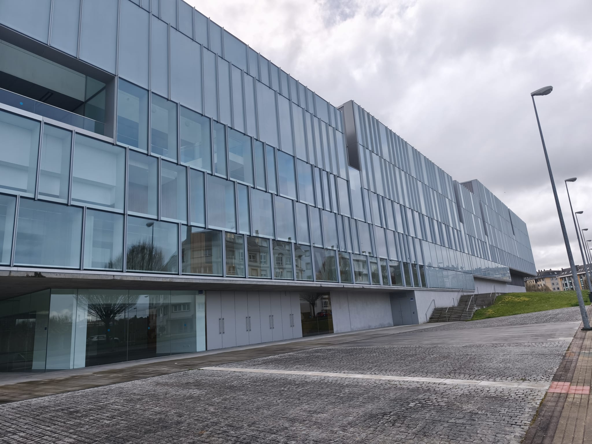
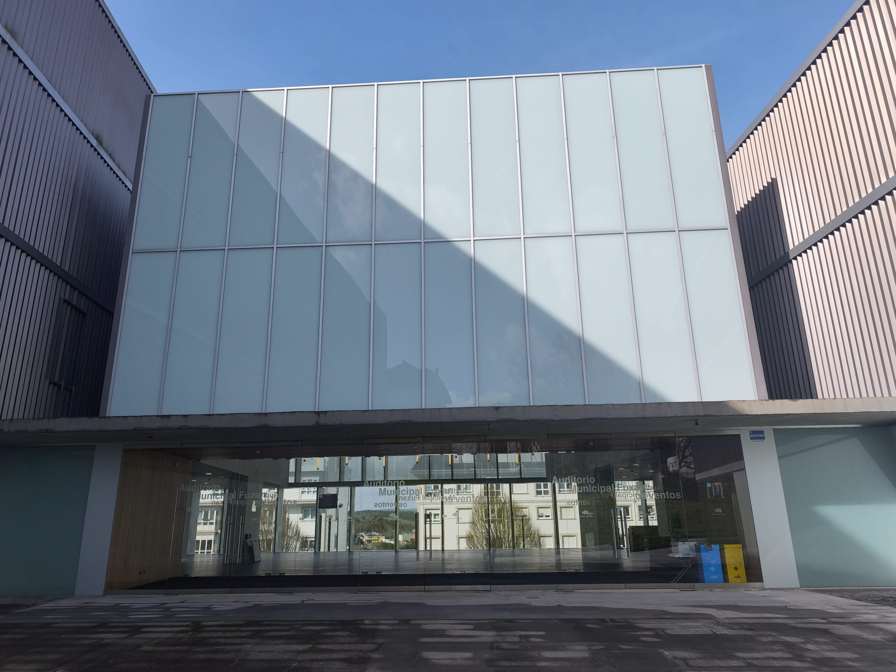
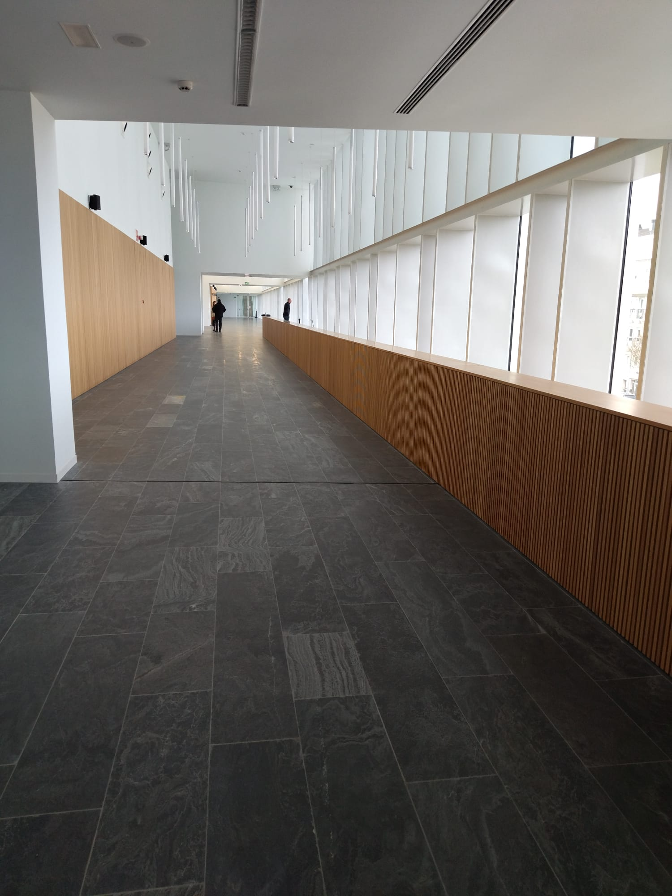
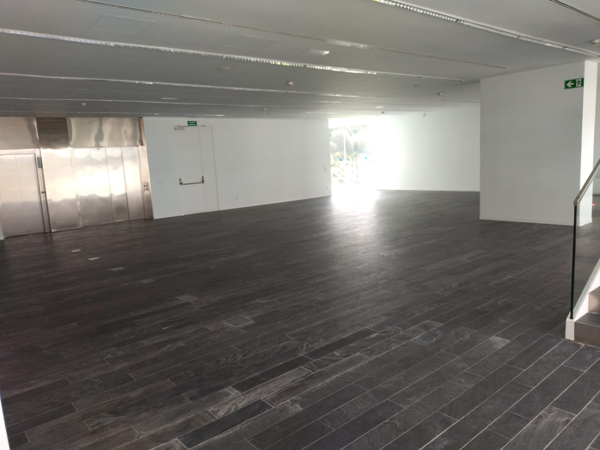

GAL
GAL
 ES
ES
 EN
EN





El Auditorio Municipal Fuxan os Ventos es un equipamiento cultural de titularidad municipal situado en la ciudad de Lugo.
El edificio cuenta con una superficie construida aproximada de más de 1.500 metros cuadrados, distribuida en varias plantas y espacios diferenciados. Dispone de una sala principal con un aforo cercano a las 900 personas, así como de salas auxiliares y zonas de uso complementario.
La construcción presenta una estructura de hormigón armado, acero y vidrio, con una fachada de diseño contemporáneo caracterizada por líneas rectas y superficies acristaladas.
El interior se organiza mediante amplios espacios de circulación, incluyendo pasillos de varios metros de anchura que conectan las distintas áreas del edificio.
El auditorio está diseñado para albergar actividades culturales y eventos de diversa índole, gracias a su distribución flexible y a la capacidad de adaptación de sus espacios interiores.